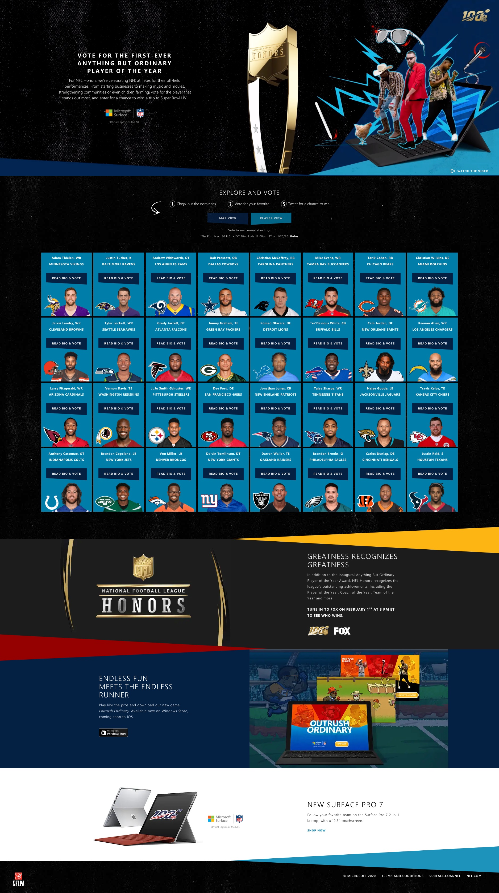
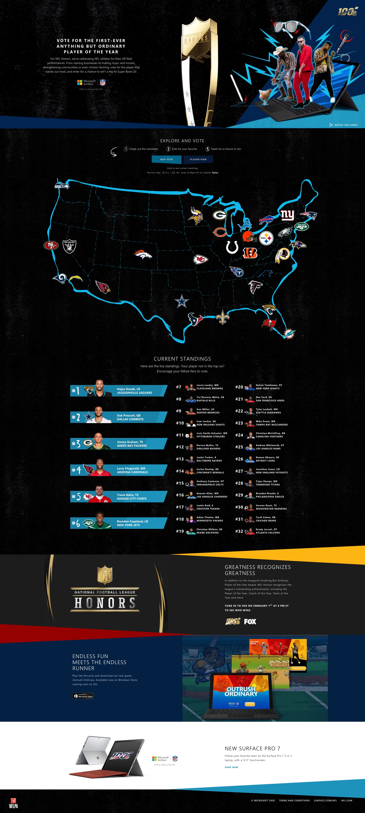
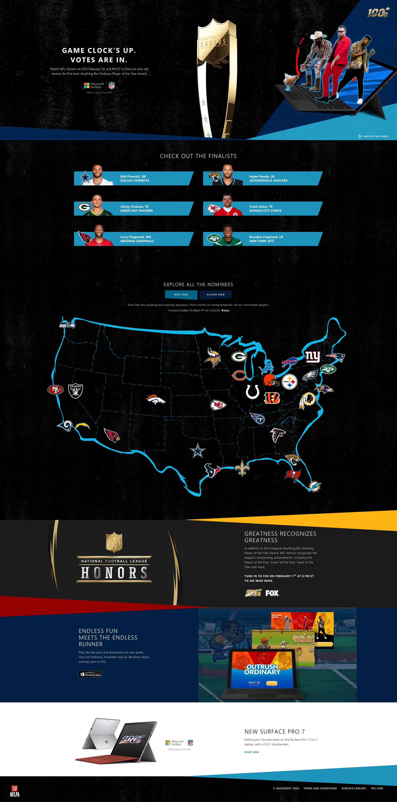

Anything but Ordinary
Client: Microsoft Surface & NFL
Microsoft's “Anything but Ordinary” NFL campaign included the first-ever Anything But Ordinary Player of the Year award, given to the player who went above and beyond on and off the field. The award was given out live at the annual NFL Honors award show during Super Bowl week.
Fans also got a chance to get into award-giving fun by tweeting their votes for the NFL's most extraordinary teams and players. The campaign won a Silver ADDY award.



Visit here for more details on the campaign.